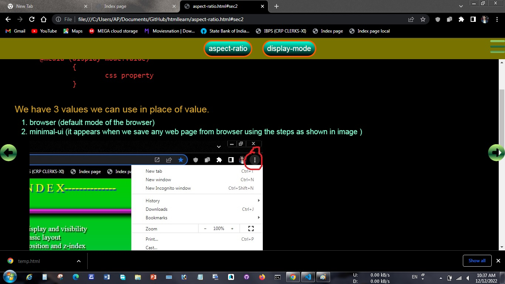
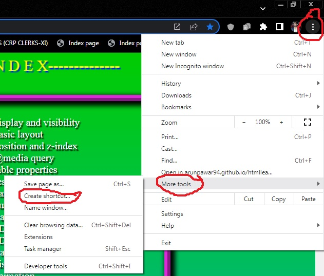
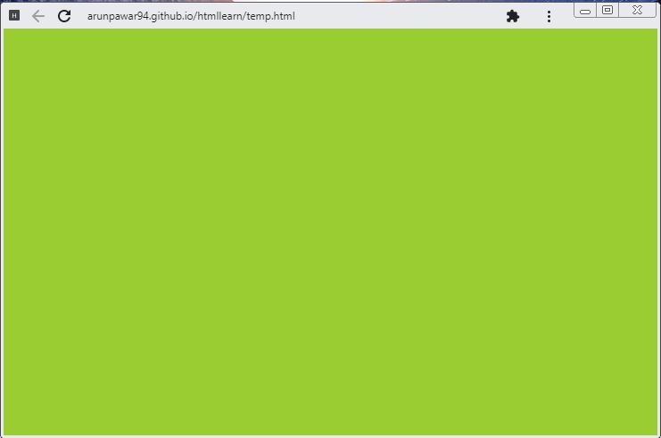
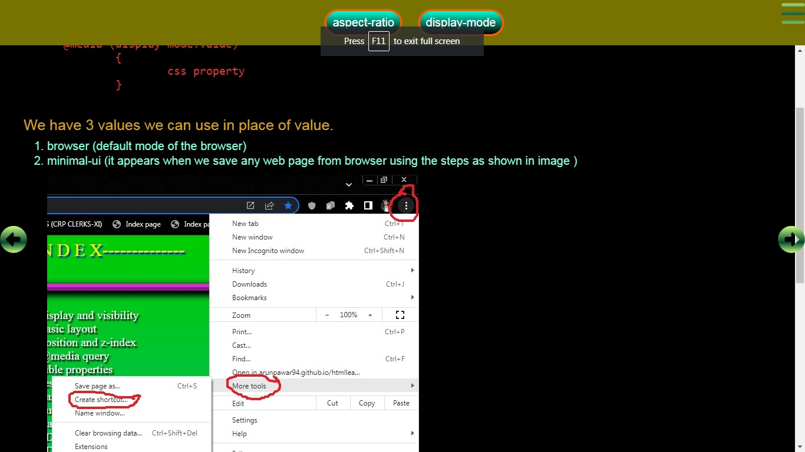

aspect-ratio:1/2;
This property is used to define ratio b/t width and height of any element.
Syntax:
1. aspect-ratio:1/2; (first value is for width and second value is for height.)
2. aspect-ratio:1; (this way is used when value of width and height is same.)
Important points:
Example:

- From "width" and "height" only one is used with "aspect-ratio" otherwise "aspect-ratio" will become useless.
- If "width" and "aspect-ratio" then "aspect-ratio" work as minimum height.
- it is mainly used for make any div, image, or video responsive.
on div
width:30%;
aspect-ratio:1/1.1;
on image
width:30%;
aspect-ratio:1/1.1;
object-fit:cover;
object-position:left;
on video
width:50%;
aspect-ratio:16/9;
Resulted div
Resize the above divs to see effect.
@media (display-mode:fullscreen)
used to change css property when we switch display mode of our browser.
Syntax: We have 3 values we can use in place of value.
@media (display-mode:value)
{
css property
}browser (default mode of the browser)
browser view of browser

minimal-ui (it appears when we save any web page from browser using the steps as shown in image )

minimal-ui view of browser

fullscreen (it appears when we press f11 key then browser enters in fullscreen display mode.)
fullscreen view of browser

:fullscreen pseudo class
used for css styling any element, If any element is view in fullscreen view.
Syntax: Example:
selector_name:fullscreen { css property }
#fbox
{
background-color: red;
width:500px;
aspect-ratio: 5/3;
}
#fbox:fullscreen
{
background-color: cornflowerblue;
}
click above button to see effect, In button we have use javascript to make the div in fullscreen.
min(), max(), clamp() functions
min(value1, value2,...., nth value) function
It is used to select minimum value among the values we give in min() function.
- In above syntax the width of the element will be 100px since it is minimum value among the given values.
- We can use value in %, vw this value are w.r.t to its parent element.
- min() function can also be use with property height, padding, margin etc
- this function can also be used within another function or vice-versa
max(value1, value2,...., nth value) function
It is used to select maximum value among the values we give in min() function.
- In above syntax the width of the element will be 600px since it is maximum value among the given values.
- We can use value in %, vw this value are w.r.t to its parent element.
- max() function can also be use with property height, padding, margin etc
- this function can also be used within another function or vice-versa
clamp(min_value, value_within_range,max_value) function
In this function there are 3 values first is minimum, second is the value which lies b/t minimum and maximum value, and the third value is the maximum.
- In above syntax, the width of the element according to the 50% of the parent element but it can't be below than 300px and can't be exceed than 800px.
- We can use value in %, vw this value are w.r.t to its parent element.
- clamp() function can also be use with property height, padding, margin etc
@media (orientation:value)
In this media rule, we can change css styling according to the portrait or landscape view.
Syntax:
@media (orientation:value)
{
selector_name
{
css property
}
}
There are only two value for orientation:
1. landscape
2. portrait
:has() pseudo class
used to select parent element with the help of child element.
Syntax:
1.
parent_element_name:has(Child_element_name)
{
css for parent_element
}
The css apply on parent element which has the given child element whose name is given in :has() pseudo class.
2.
parent_element_name:has(Child_element1, child_element2....., child_elementn )
{
css for parent_element
}
Here we have given multiple child elements name, The css apply on every parent element which has the given child elements whose name is given in :has() pseudo class.
3.
parent_element_name:has(> Child_element_name)
{
css for parent_element
}
The css apply on parent element, only if the given child element whose name is given in :has() pseudo class is the direct child element of that parent element.
4.
parent_element_name:has(Child1 + child2)
{
css for parent_element
}
The css apply on parent element, only if the given child2 element is immediate after child1 element.
5.
parent_element_name:has(+ child2)
{
css for parent_element
}
The css apply on parent element, only if the given child2 element is immediate after parent element.
6.
parent_element_name:not(:has(Child1))
{
css for parent_element
}
The css apply on all parent element, which does not have child element "child1"
7.
parent_element_name:has(Child1) child2
{
css for parent_element
}
The css apply on child element "child2", only if the given "child1" is the child of the given parent element.
8.
parent_element_name:has(*:empty)
{
css for parent_element
}
The css apply on all parent element, if any child element is empty within that parent element.
some examples:
- div:has(h2) apply on div if h2 is child of any div.
- div:has(h2,h3,h1) apply on those divs if h2 or h3 or h1 is child of any div.
- div:not(:has(h2)) apply on div if h2 is child not the child of any div.
- form:has(input[type="checkbox"]:checked){} apply on form if input of type checkbox is checked.
- form:has(input[type="checkbox"]:checked) button{} apply on button if input of type checkbox is checked.
- label:has(+ input[type="checkbox"]:checked){} apply on label only if there input of type checkbox is checked immediate after the label.
- label:has(+ input:focus){} apply on label if input is focused.